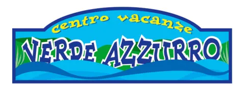
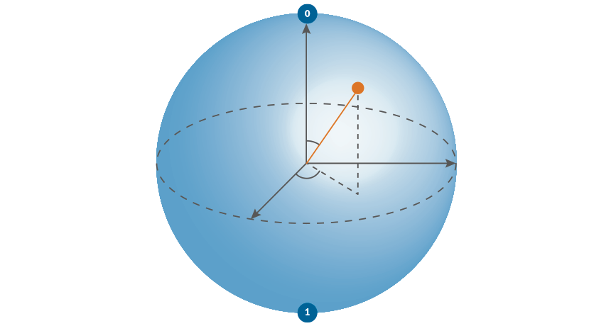

Attività come assistente bagnante
Ho conseguito il brevetto di bagnino di salvataggio MIP il 30 aprile 2024. Il mio percorso formativo ha incluso il corso BLSD, che mi ha permesso di acquisire le tecniche necessarie per gestire situazioni di emergenza e intervenire tempestivamente in contesti complessi.
Attualmente lavoro come bagnino presso l'Acquaparco Verde Azzurro di Cingoli. Svolgo le mie mansioni con un forte senso di responsabilità verso i bagnanti, consapevole che la sicurezza è il requisito fondamentale di ogni attività acquatica.
Applico questo approccio rigoroso non solo durante la sorveglianza attiva, ma in ogni operazione che il mio ruolo richiede, comprese le attività di manutenzione ordinaria e tecnica. Il mio obiettivo è garantire che ogni ospite possa godere dell'acquaparco in totale sicurezza, attraverso una costante attenzione operativa e un monitoraggio continuo dell'impianto.

Corso d'intelligenza artificiale e quantum computing
Durante il quarto anno di scuola superiore ho partecipato a un percorso formativo extra-curricolare su Intelligenza Artificiale e Quantum Computing, finanziato tramite fondi PNRR.
Il corso mi ha permesso di esplorare le fondamenta di queste tecnologie, spingendomi ad approfondire le strutture matematiche e la logica che ne sono alla base. Questo interesse mi ha aiutato a comprendere meglio la complessità dei sistemi di calcolo moderno e ha rafforzato il mio approccio analitico verso i problemi tecnici.

Corso di lingua inglese livello B2
Quest'anno ho frequentato un corso specialistico di lingua inglese volto al raggiungimento del livello B2, guidato dall'insegnante Martina Ciattaglia e dal docente madrelingua Edgar Atamba.
Questo percorso mi ha permesso di affinare notevolmente le mie competenze comunicative, sviluppando fluidità, sicurezza e naturalezza nell'esposizione orale (speaking) e perfezionando la pronuncia e la comprensione spontanea.